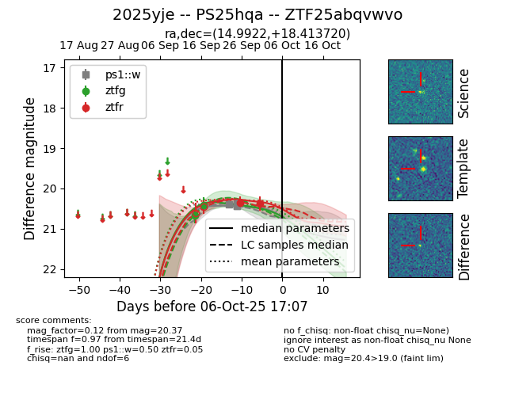
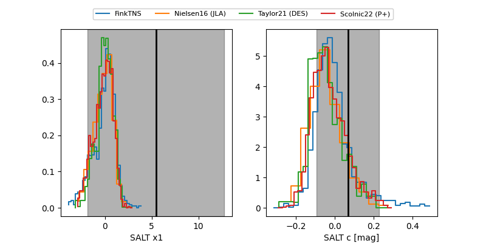

FINK: ZTF25abqvwvo
Lasair: ZTF25abqvwvo
ALeRCE: ZTF25abqvwvo
TNS: 2025yje
YSE: 2025yje
ZTF25abqvwvo (ztf,fink)
2025yje (tns,yse)
PS25hqa (panstarrs)
equatorial (ra, dec) = (14.9922,+18.41372)
galactic (l, b) = (125.7652,-44.41109)


last ps1::w=20.44, ztfg=20.42, ztfr=20.37
5 ps1::w, 2 ztfg, 2 ztfr detections